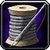
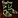
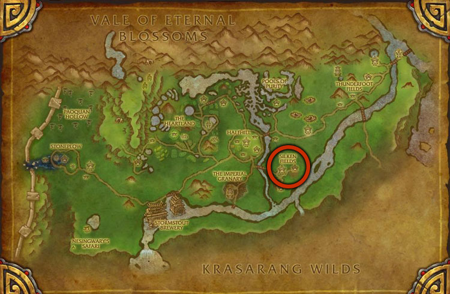

This MoP Classic Tailoring leveling guide will show you the fastest and easiest way to get your Tailoring skill up from 1 to 600 in Mists of Pandaria Classic.Shopping List
This is the list of the approximate materials required to level Tailoring up to 600.
Classic (1-300)
- 204x Linen Cloth
- 135x Wool Cloth
- 804x Silk Cloth
- 376x Mageweave Cloth
- 800x
 Runecloth
Runecloth
TBC (300-350)
- 700x Netherweave Cloth
- 12x Arcane Dust
- 20x Knothide Leather
WotLK (350-425)
- 1200x Frostweave Cloth
- 20x Infinite Dust
- 20x from one of these: Eternal Life, Eternal Shadow, Eternal Fire
Cataclysm (425-500)
- 1005x Embersilk Cloth
MoP (500-600)
- 485x Windwool Cloth
Tailoring trainers
| Horde | Alliance |
|---|---|
Outland
Northrend
Pandaria
|
Outland
Northrend
Pandaria
|
Leveling MoP Classic Tailoring
1 - 75
You will need around 59x Coarse Thread for the 1-75 part. You can buy them from the Tailoring Supplies vendor near your trainer. When buying from the vendor, use SHIFT + MOUSE CLICK, then type in how many you want. (the maximum amount you can buy at once is 20 for threads and 10 for dyes)
I don't recommend buying all the dyes and thread at once because it will fill up your inventory and you won't have that much bag space to craft items. I'll list the needed Dyes and Thread for each part separately.
- 1 - 45
102x Bolt of Linen Cloth - 204 Linen ClothStop making these if you reach 45 and only make more if you need them.
- 40 - 67
35x Linen Belt - 35 Bolt of Linen Cloth, 35 Coarse Thread
- 67 - 75
8x Reinforced Linen Cape - 16 Bolt of Linen Cloth, 24 Coarse Thread
Journeyman Tailoring
Visit your trainer and learn Journeyman Tailoring. (Requires level 10)
You will need around 43x Fine Thread for the 75-125 part. You can vendor any remaining Coarse Thread, you won't need them.
75 - 125
- 75 - 100
45x Bolt of Woolen Cloth - 135 Wool Cloth
- 100 - 110
13x Simple Kilt - 52 Bolt of Linen Cloth, 13 Fine Thread
Simple Kilt - 52 Bolt of Linen Cloth, 13 Fine Thread
You might have to make a few more from this if you were really unlucky with the skill gains.
- 110 - 125
15x Double-stitched Woolen Shoulders - 45 Bolt of Woolen Cloth, 30 Fine Thread
Expert Tailoring
Visit your trained and learn Expert Tailoring. (Requires level 20)
You will need 36x Blue Dye, 83x Fine Thread, 10x Bleach, 40x Red Dye for the 125-205 part.
125 - 205
- 125 - 145
201x Bolt of Silk Cloth - 804 Silk Cloth
- 145 - 160
18x Azure Silk Hood - 36 Bolt of Silk Cloth, 36 Blue Dye, 18 Fine ThreadYou might have to make a few more if you didn't reach 160.
- 160 - 170
10x Silk Headband - 30 Bolt of Silk Cloth, 20 Fine Thread
- 170 - 175
5x Formal White Shirt - 15 Bolt of Silk Cloth, 10 Bleach, 5 Fine Thread
- 175 - 185
94x Bolt of Mageweave - 376 Mageweave Cloth
- 185 - 205
20x Crimson Silk Vest - 80 Bolt of Silk Cloth, 40 Fine Thread, 40 Red Dye
Artisan Tailoring
Visit your trainer and learn Artisan Tailoring. (Requires level 35)
You will need 20x Silken Thread, 71x Heavy Silken Thread, 20x Red Dye, 5x Orange Dye and 75x Rune Thread for the 205-300 part.
205 - 300
- 205 - 215
10x Crimson Silk Pantaloons - 40 Bolt of Silk Cloth, 20 Red Dye, 20 Silken Thread
- 215 - 220
5x Orange Mageweave Shirt - 5 Bolt of Mageweave, 5 Orange Dye, 5 Heavy Silken Thread
- 220 - 230
10x Black Mageweave Gloves - 20 Bolt of Mageweave, 20 Heavy Silken Thread
Black Mageweave Gloves - 20 Bolt of Mageweave, 20 Heavy Silken Thread
- 230 - 250
23x Black Mageweave Headband - 69 Bolt of Mageweave, 46 Heavy Silken Thread
- 250 - 260
200x Bolt of Runecloth - 800 Runecloth
- 260 - 280
25x Runecloth Belt - 75 Bolt of Runecloth, 25 Rune ThreadThe recipe goes yellow at 270, you might have to make a few more.
- 280 - 300
25x Runecloth Gloves - 125 Bolt of Runecloth, 50 Rune ThreadThe recipes will be yellow at 290, so you might have to make a few more.
Master Tailoring
You will need 23x Rune Thread for the 300-350 part.
300 - 350
- 300 - 325
140x Bolt of Netherweave - 700 Netherweave ClothYou will use all of these later so it's better to make all of them now for free skill points.
- 325 - 331
Visit Eiin in Shattrath City.
Buy these two patterns:
Then make 6 Bolt of Imbued Netherweave:
6x Bolt of Imbued Netherweave - 18 Bolt of Netherweave, 12 Arcane Dust
- 331 - 336
5x Netherweave Pants - 30 Bolt of Netherweave, 5 Rune Thread
Netherweave Pants - 30 Bolt of Netherweave, 5 Rune Thread
This recipe is taught by your trainer, so you'll need to return to them. Just make sure to buy
 Pattern: Netherweave Tunic before you leave Shattrath City.
Pattern: Netherweave Tunic before you leave Shattrath City.
- 336 - 346
10x Netherweave Boots - 60 Bolt of Netherweave, 20 Knothide Leather, 10 Rune Thread
Netherweave Boots - 60 Bolt of Netherweave, 20 Knothide Leather, 10 Rune Thread
- 346 - 350
4x Netherweave Tunic - 32 Bolt of Netherweave, 8 Rune ThreadThe recipe is sold by Eiin in Shattrath City.
Grand Master Tailoring
Visit your trainer and learn Grand Master Tailoring. (Requires level 65)
You will need 38x Eternium Thread for the 350-425 part.
350 - 425
- 350 - 375
240x Bolt of Frostweave - 1200 Frostweave Cloth
- 375 - 380
5x Frostwoven Belt - 15 Bolt of Frostweave, 5 Eternium Thread
- 380 - 385
5x Frostwoven Boots - 20 Bolt of Frostweave, 5 Eternium Thread
- 385 - 395
13x Frostwoven Cowl - 65 Bolt of Frostweave, 13 Eternium Thread
- 395 - 400
5x Duskweave Belt - 35 Bolt of Frostweave, 5 Eternium Thread
- 400 - 405
10x Bolt of Imbued Frostweave - 20 Bolt of Frostweave, 20 Infinite DustMaking around 10 should get you to 405. Make a few Duskweave Leggings if you did not reach 405.
Keep these. You will need them at 415.
- 405 - 410
5x Duskweave Wristwraps - 40 Bolt of Frostweave, 5 Eternium Thread
Duskweave Wristwraps - 40 Bolt of Frostweave, 5 Eternium Thread
- 410 - 415
5x Duskweave Gloves - 45 Bolt of Frostweave, 5 Eternium Thread
- 415 - 425
Make 10 from one of these three:10x Spellweave - 10 Bolt of Imbued Frostweave, 20 Eternal Fire
10x Moonshroud - 10 Bolt of Imbued Frostweave, 20 Eternal Life
10x Ebonweave - 10 Bolt of Imbued Frostweave, 20 Eternal Shadow
Cataclysm Tailoring
Visit your trainer and learn the Cataclysm Tailoring skill. (Requires level 75)
You will need 100x Eternium Thread for the 425-500 part.
425 - 500
- 425 - 450
201x Bolt of Embersilk Cloth - 1005 Embersilk Cloth
- 450 - 456
6x Deathsilk Bracers - 12x Bolt of Embersilk Cloth, 12x Eternium Thread
- 456 - 460
4x Deathsilk Boots - 12 Bolt of Embersilk Cloth, 8 Eternium Thread
- 460 - 465
5x Deathsilk Leggings - 15 Bolt of Embersilk Cloth, 10 Eternium Thread
- 465 - 471
6x Deathsilk Cowl - 18 Bolt of Embersilk Cloth, 12 Eternium Thread
- 471 - 475
4x Spiritmend Belt - 16 Bolt of Embersilk Cloth, 8 Eternium Thread
- 475 - 480
5x Spiritmend Boots - 20 Bolt of Embersilk Cloth, 10 Eternium Thread
- 480 - 486
6x Spiritmend Leggings - 24 Bolt of Embersilk Cloth, 12 Eternium ThreadAs an alternative, you can make Embersilk Bag or Otherworldly Bag up to 490. One bag gives 5 skill points, so you have to make only two.
- 486 - 500
14x Spiritmend Robe - 84 Bolt of Embersilk Cloth, 28 Eternium Thread
MoP Classic Tailoring
Visit your trainer and learn Zen Tailoring. You can learn the new MoP Tailoring from Silkmaster Tsai at the Silken Fields in Valley of the Four Winds. But you can also learn it from any tailoring trainer in the old capital cities of Azeroth, so there's no need to go to Pandaria right away. However, you will have to go there eventually to craft at least one recipe, since it can only be crafted near the trainer.
Visit my Windwool Cloth farming guide if you are looking for good farming places.
500 - 555
- 500 - 535
97x Bolt of Windwool Cloth - 485 Windwool Cloth
- 535 - 547
4x Windwool Shoulders - 16 Bolt of Windwool Cloth
- 547 - 550
1x
Windwool Boots - 4 Bolt of Windwool Cloth
- 550 - 555
1x Imperial Silk - 8 Bolt of Windwool ClothYou can craft this item if you visit The Silken Fields at the center of Valley of the Four Winds. This is a level 86 zone but you can easily go there at Level 85. The Silken Fields are south-east from Halfhill.

Darkmoon Faire Free +5 Profession Skill
Check your Calendar in-game to see if the Darkmoon Faire is open. The event is available every two weeks. It starts on Sunday and lasts for a week.
During the event, you can complete quests for each profession and gain +5 skill points for each. Click here to read more about the quests.
555 - 600
Buy  Pattern: Contender's Satin Cuffs or
Pattern: Contender's Satin Cuffs or  Pattern: Contender's Silk Cuffs from
Pattern: Contender's Silk Cuffs from  Esha the Loommaiden in Shrine of Two Moon, or from
Esha the Loommaiden in Shrine of Two Moon, or from  Raishen the Needle in Shrine of Seven Stars.
Raishen the Needle in Shrine of Seven Stars.
Each recipe costs 1x Spirit of Harmony.
23x Contender's Silk Cuffs - 69x Bolt of Windwool Cloth
Now that you've maxed out Tailoring, check out the full overview of MoP Classic Tailoring. It includes profession perks, recipes, reputation gear, and epic item crafts:
MoP Classic Tailoring Overview
Congratulations on reaching 600! If you spot any typos, wrong material counts, or have suggestions to improve the guide, feel free to send feedback.